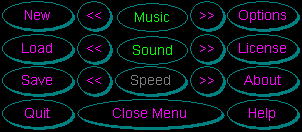
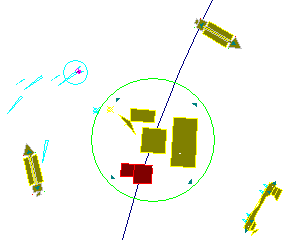

Gravity Well starts in demo mode with the credits scrolling by. Praise and glory to the hard working individuals who dedicated their lives to this project.
To start a game, click the menu button. The following menu is displayed.

Selecting 'New' displays the Start Gravity Well setup box. Each of the buttons at the top can be pressed to randomize the values.
Human - The Human column determines which squadron you will fly with. If only one fighter per squadron is selected, you're it.
Personality - Different personalities behave differently throughout the game. The personality type also affects the behavior of the computer controlled fighters in your squadron. Some personalities will stick with you while others operate on a different agenda. As you fight with each of the different personalities, you will begin to fathom what is important to which persona. For beginners, the Trepidatious persona is a good starting opponent. They are extreme cowards and usually avoid contact with alien races. Their homeworlds will aggressively defend themselves however, so use caution when approaching them. The Cooperative persona makes the best wingman.

Aggressive - A moderately difficult enemy, the aggressive persona cares little for helping any human squadron members.Weapon - If a weapon is assigned to a squadron, every fighter is automatically equipped with the weapon at the start of the game and each time a new one is built. It should be noted that not all weapons are available as starting weapons. Some things just have to be researched.
Shield - Shield assignment works the same as weapons. Ion shields are the only type of shields available at start up.
Number of Stars represents how many stars Gravity Well will attempt to place within the sector. In reality, a sector with 7 stars would be an unusual.
The Chance of a Planet Occurring in Each Orbit determines the overall amount of planets in the sector. A large percentage will result in lots of virgin planets to be claimed and fought over.
The Number of Fighters Per Squadron determines how many fighters each squadron gets. All computer controlled fighters on your squadron assume the persona you specify for your squadron.
Your Name registers you as a pilot. High scores are kept forever for each new pilot name entered in the name field. High scores can be view in the ending game credits.
Network Setup information is currently under development and will be enabled in the Gravity Well v4.1. All registered users of Gravity Well will be entitled to a free upgrade.
Load a save game.
Save the current game.
Quit the game. Does not prompt for saving.
The music can be toggled on or off. The arrows to the left and right of the toggle are volume controls. Any .mid file can be placed in the Gravity Well directory and the game will randomly play the song. There is no limit to the number of .mid files that can be placed in the directory. Lots of interesting .mid files can be found to enhance the ambience of the game.
The sound can be toggled on or off. The arrows to the left and right of the toggle are volume controls.
There are eleven increments of speed control.
This closes the menu.
The options menu allows you to toggle display options which can affect game performance. By default, orbit rings and unit fill are on while planet and star fill is off.
Show orbits of planets turns on blue orbit rings showing the orbital paths of the planets.
Fill units with solid colors fills all units with solid colors. This option can have a big effect on game perfomance for slower computers.
Fill planets and stars with solid colors will solid fill the planets and stars.
License allows you to enter your license and password when you register Gravity Well. A license will enable all the weapons and shields for the human player. See Licensing And Passwords for more information.
A little about us and how to contact us.
Displays the Table of Contents for Gravity Well help.
| Control Summary | Table Of Contents | Playing The Game |